Chart-Werkstatt
Erlaubt: chartjs.org/docs, das Cheatsheet, AI mit «Erkläre mir …» – nicht «Schreib mir …».
Stimmt euer Diagramm mit dem Zielbild überein, ist die Karte gelöst.
Der Startstand in start/: die Hitzetage in Bern, ein Balken pro Sommer.
Jede Karte verändert diesen Stand an einer Stelle.
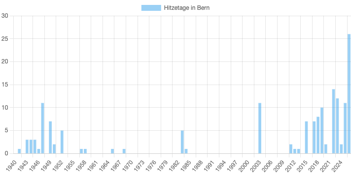
Zeig die Hitzetage als Linie statt als Balken.
Tipp: Es ist genau ein Wort.
Danach: Welche Darstellung passt besser zu dieser Aussage?
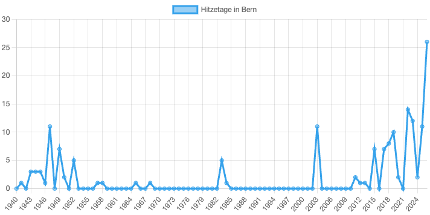
Zeig die Hitzetage von Zürich statt von Bern.
Tipp: Der Endpunkt filtert selbst – schau dir die URL an.
Vergiss die Beschriftung nicht.
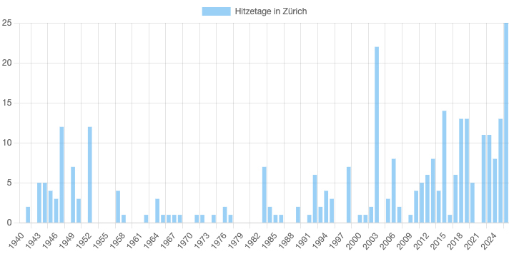
Gib den Balken die Farbe #b5723a.
Tipp: Die Farbe gehört zum Dataset und heisst backgroundColor.
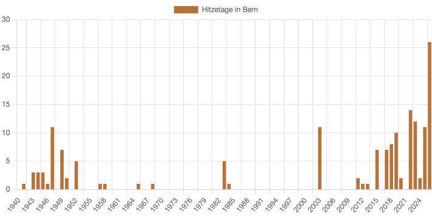
Blende die Legende aus und setze einen Titel, der die Aussage nennt.
Tipp: options → plugins → title und legend.
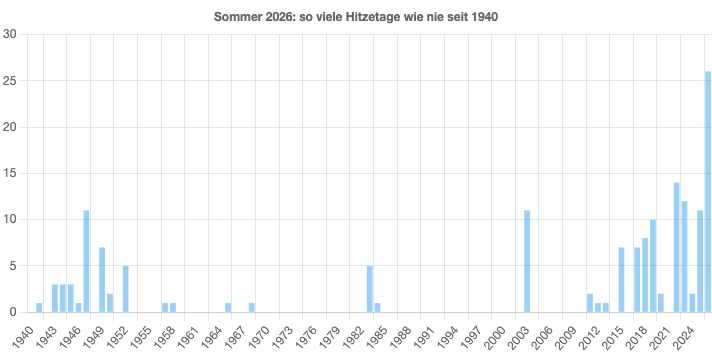
x-Achse «Sommer», y-Achse «Tage mit mindestens 30 °C».
Tipp: options → scales → x und y → title.
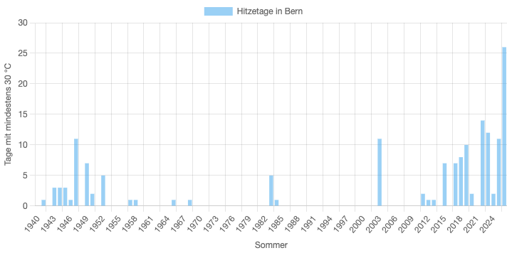
Zeig nur die Sommer ab 1980.
Tipp: Zuerst auswählen mit filter(), dann umformen mit map().
year ist ein String – der Vergleich mit 1980 klappt trotzdem.
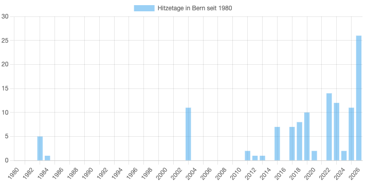
Ab 10 Hitzetagen orange (#b5723a), sonst petrol (#4b93a4).
Tipp: backgroundColor darf auch eine Liste sein – eine Farbe pro Balken.
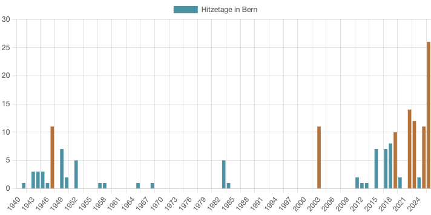
Beim Darüberfahren soll «26 Hitzetage» stehen statt «Hitzetage in Bern: 26».
Tipp: options → plugins → tooltip → callbacks → label. Der Wert steht in context.parsed.y.
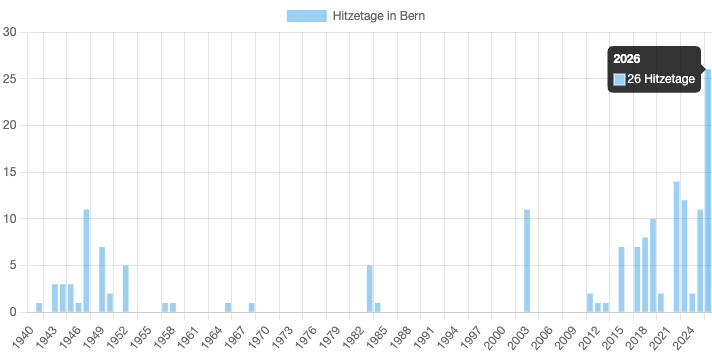
Die zehn Sommer mit den meisten Hitzetagen als liegende Rangliste.
Tipp: sort(), dann slice(0, 10), dann indexAxis: 'y'. Sortiert eine Kopie: [...rows].
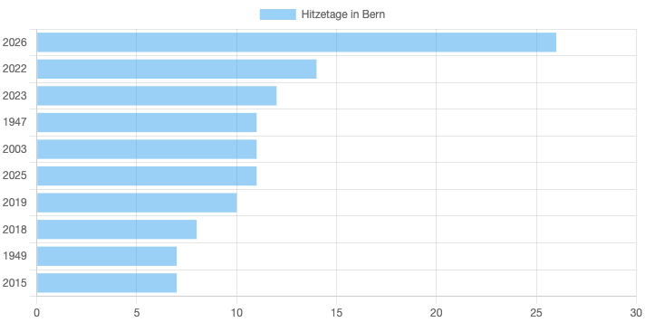
Bern und Zürich als zwei Linien im selben Diagramm.
Tipp: Ohne ?city=… liefert der Endpunkt alle Städte. Dann zweimal filter() – datasets ist eine Liste.
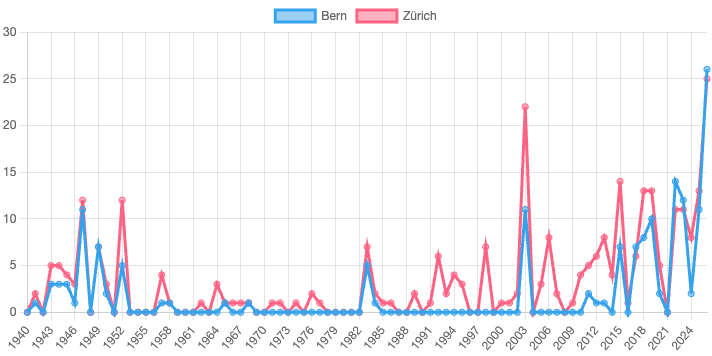
Zwei Knöpfe «Bern» und «Zürich» wechseln die Stadt im Diagramm.
Tipp: Diagramm einmal erzeugen, danach chart.data ändern und chart.update() aufrufen. Ein zweites new Chart() meldet «Canvas is already in use».
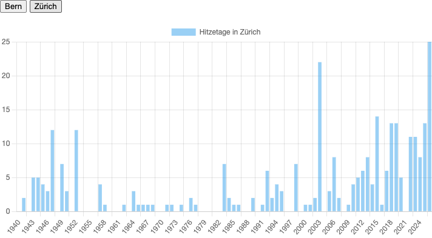
Macht die Grafik so irreführend wie möglich – ohne einen einzigen Wert zu verändern.
Am Schluss zeigt ihr eure Grafik der Klasse.
Die Klasse muss euren Trick finden.
Welche Karte braucht eure eigene Grafik?